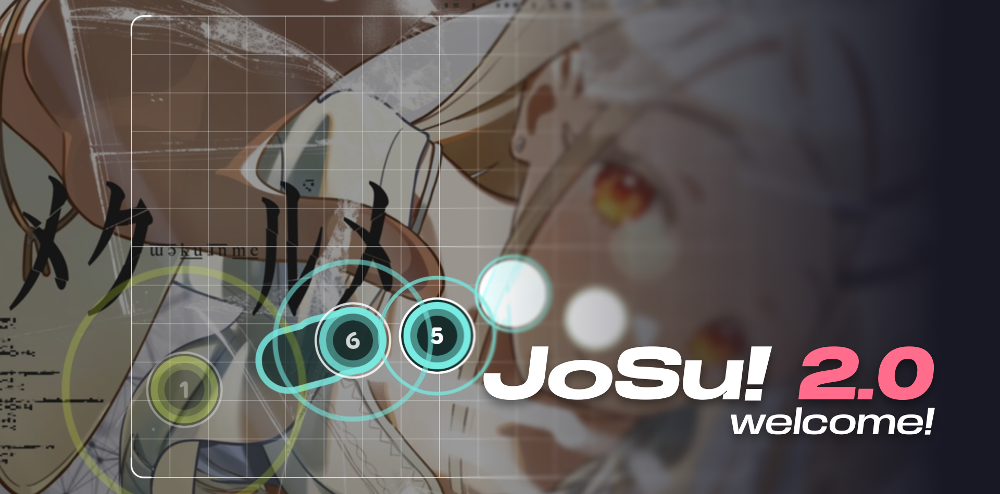

Artist - Title
by Mapper
Choose Difficulty
SR★

Welcome to JoSu!
To start JoSu!, please select a beatmap ID from
osu! beatmap listing page
.
Alternatively, you can import a local beatmap or replay by using the import button or drag and drop the .osz/.osr into the site.
Settings
Change how JoSu! behaves
Skinning
Current Skin
Ignore beatmap skin
Cursor Size
1.00x
Mods
Hidden
Hard Rock
Double Time
Easy
Gameplay
Show Grid
Snaking In Slider
Snaking Out Slider
Tint Sliderball
Hit Animation
Background
Background Dim
100%
Background Blur
100%
Show Video
Show Storyboard
Audio
Master Volume
100%
Music Volume
100%
Effect Volume
100%
Disable beatmap hitsound
Beatmap Mirror
Nerinyan
Sayobot
Nekoha
osu.direct
Mino
Experimental
Asynchronous Loading
Load beatmap asynchronously for responsiveness
Antialiasing
Might cause performance issues on lower-end devices
Overlap gameplays in multi-mode
Renderer
Current Renderer
WebGL
WebGPU
Reload default skins
About me
In case you wanna contact me :D
ANON TOKYO
FukutoTojido
@FukutoTojido
JoSu! is loading
Initiating